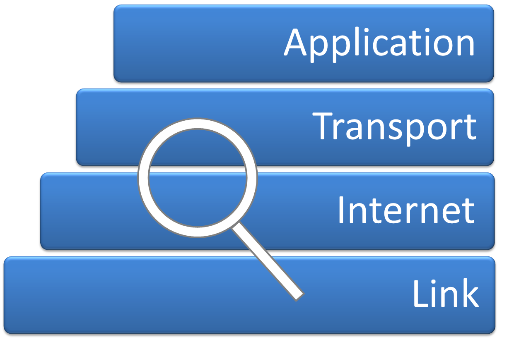

5.2. Protocolo de Internet (IP). Enrutadores

Internet Protocol Analysis
Imagen de commons.wikimedia.org (Autor: Dave Braunschweig). Recuperado de https://commons.wikimedia.org/wiki/File:Internet_Protocol_Analysis.png. Licencia CC BY-SA de Creative Commons 3.0
{kind=link}
PROTOCOLO IP
El protocolo IP (Internet Protocol) es el protocolo que se utiliza en Internet. Corresponde al nivel de red o nivel 3 y es uno de los responsables del éxito de Internet.
Actualmente, existen dos versiones de IP (versión 4 y versión 6). La versión 6 apareció debido a que IPv4 se estaba quedado sin direcciones libres. En la cabecera IP, existe un campo "Tiempo de vida" mediante el cuál se puede controlar el tiempo que un paquete está viajando por la red. Si supera un número de saltos máximo, el paquete se descarta y se informa al origen de dicho suceso.
Cualquier equipo conectado a una red, necesita estar identificado de forma que otros equipos informáticos puedan enviarle datos encapsulados en paquetes. Esta identificación se consigue con la dirección IP, por tanto, todos los dispositivos en una red tienen que tener asignada una dirección IP. Las dirección IPv4 son de 4 bytes (32 bits). En un mensaje de este protocolo deben viajar tanto la dirección de origen como la dirección de destino.
Con la versión 6 de IP, se supone que se eliminan aquellos aspectos negativos de la versión 4 y añade mejoras. Además, se sigue manteniendo la modularidad, es decir, es compatible con las capas superiores. A diferencia de los 4 bytes de IPv4, en esta versión se tienen 16 bytes por lo que sería prácticamente imposible agotarlas. La idea es proporcionar múltiples niveles de jerarquía y flexibilidad en el diseño del direccionamiento y enrutamiento jerárquicos.
Entre las mejoras que introduce, destaca la simplificación de las cabeceras de este protocolo haciendo que sea más sencilla la conmutación en los router. También introduce mejoras en cuanto a la calidad de servicio, dado la creciente aparición de aplicaciones web que demandan distintos tipos de requerimientos.
ROUTER
Un router o encaminador de paquetes posiblemente sea el elemento más importante en una red. Se encarga de dirigir los paquetes que entran por alguno de sus interfaces y, de acuerdo a unas tablas de encaminamiento que dispone, selecciona el interfaz de salida en función de la dirección de destino del paquete.
Un router pertenece al nivel de red en el modelo de OSI. En el modelo TCP/IP, en este nivel se tiene IP (Internet Protocol).
La función del router es analizar los paquetes que le llegan, para ello comprueba la dirección IP del destino de los paquetes y busca la acción a realizar en la tabla de enrutamiento. El resultado puede ser que el equipo al que van los paquetes pertenezcan a una subred que es controlada por el router, por tanto, solo tendría que enviar los paquetes por el puerto correspondiente. Puede ser que no sea así y tenga que enviarlo por otro interfaz que tendrá otro router en el extremo opuesto que sabrá qué hacer con ese paquete.
Además, el éxito de este protocolo radica en el dinamismo de las tablas de encaminamiento de los router. Son tablas dinámicas que se actualizan, de manera que normalmente no se define en una red solo un camino para alcanzar un destino, sino que se configura para que haya varias alternativas. Si un enlace queda indisponible, los paquetes que necesitan dicho enlace para alcanzar al destino, usarán una ruta alternativa hasta que se recupere.
En entornos domésticos, es frecuente encontrar un router que realizan varias funciones en una red local. En primer lugar, hace la función de concentrador ya que dispone de puertos RJ-45 a los que se puede conectar algún equipo informático mediante cable. Además, la mayoría de estos router dota a la red local de acceso inalámbrico dotándola de gran flexibilidad.

Router
Imagen de pixabay.com (autor: annca). Recuperado de https://pixabay.com/es/wlan-web-acceso-internet-3131127. Licencia CC0 Creative Commons. Gratis para usos comerciales. No es necesario reconocimiento.
Importante
- El protocolo IP: El protocolo IP (Internet Protocol) es el protocolo que se utiliza en Internet. Corresponde al nivel de red o nivel 3 y es uno de los responsables del éxito de Internet.
- Router o encaminador de paquetes: Posiblemente es el elemento más importante en una red. Se encarga de dirigir los paquetes que entran por alguno de sus interfaces y, de acuerdo a unas tablas de encaminamiento que dispone, selecciona el interfaz de salida en función de la dirección de destino del paquete.